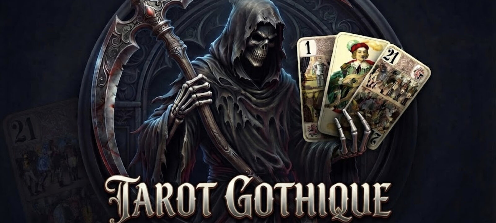

لعبة ورق التاروت أونلاين على جوال أندرويد
مرحبًا بك في الموقع الرسمي للتاروت القوطي 2026، لعبة تاروت اجتماعية لنظام Android. العب ضد الآخرين أونلاين أو تدرّب وحدك ضد الذكاء الاصطناعي، في عالم قوطي بلمسات ذهبية، وفق قواعد التاروت الفرنسي لـ3 و4 و5 لاعبين.
العب على Android أو مباشرة في متصفحك أو على Linux: انضم إلى طاولات متعددة اللاعبين في الوقت الفعلي أو ابدأ مباراة فردية حتى عند عدم توفر لاعبين آخرين.


ألعاب أونلاين ومنفردة
نافس عشاق التاروت الآخرين أونلاين أو تدرّب وحدك ضد الذكاء الاصطناعي.
التاروت القوطي
انغمس في جمالية قوطية داكنة ساحرة مزينة بتفاصيل ذهبية راقية.
قواعد لعبة الورق
أتقن قواعد التاروت الفرنسي واستراتيجيات العقود وحساب النقاط لـ3 و4 و5 لاعبين.
نزّل Tarot Gothique 2026: Android وWeb وLinux وWindows
اختر منصتك: لعبة التاروت نفسها، فرديًا ضد الذكاء الاصطناعي أو عبر الإنترنت ضد لاعبين آخرين.
Linux
أرشيف .tar.gz لأجهزة Linux بنظام 64 بت (Ubuntu وDebian وFedora…).
نزّل لنظام Linux دليل التثبيت (بالإنجليزية)التطبيق في مرحلة اختبار مغلق على Google Play: لتثبيته، انضم أولًا إلى مجموعة المختبرين. كن مختبِرًا تجريبيًا للتاروت القوطي (الصفحة بالفرنسية)
كيف تلعب لعبة ورق التاروت القوطي؟
يتبع التاروت القوطي التاروت الفرنسي التقليدي: 78 ورقة، ومزايدة في بداية كل جولة، ثم لاعب آخذ يواجه فريق الدفاع لمّة بعد لمّة. تفهم المبدأ في دقائق، لكن إتقانه يحتاج إلى مباريات كثيرة: حقّق عقدك بالفوز بالأوراق المناسبة في اللحظة المناسبة.
تحسب اللعبة النقاط نيابةً عنك وتعرض جدول النتائج في نهاية كل جولة، لتركّز على الاستراتيجية بدلًا من الحساب.
قيم الأوراق والـBouts والنقاط المطلوبة لكل عقد مفصّلة كلها في صفحة قواعد التاروت الفرنسي.
لعبة ورق التاروت لـ3 و4 و5 لاعبين
- 3 لاعبين: مباراة سريعة يلعب فيها كل واحد لنفسه. يحصل كل لاعب على 24 ورقة، وتشكّل 6 أوراق “الكلب” (chien).
- 4 لاعبين: الصيغة المرجعية: 18 ورقة لكل لاعب، و6 في الكلب، ولاعب آخذ وحده ضد ثلاثة مدافعين.
- 5 لاعبين: يحصل كل لاعب على 15 ورقة وتشكّل 3 أوراق الكلب. يستدعي الآخذ ملكًا، فيصبح من يملكه شريكه السري في تلك الجولة، وعلى الآخرين كشفه قبل أن يُلعب الملك المستدعى.
مهما كان عدد اللاعبين، يجب أن يبلغ الآخذ نتيجة تتوقف على الـBouts التي يفوز بها (Petit، و21 الأتو، والـExcuse): 56 نقطة دون أي Bout، و51 مع واحد، و41 مع اثنين، و36 مع الثلاثة. يملأ الذكاء الاصطناعي المقاعد الفارغة على الطاولة، لذا يمكنك اللعب بثلاثة أو أربعة أو خمسة حتى لو كنت وحدك.
نسخة التاروت القوطي
يطبّق التاروت القوطي قاعدة خاصة بالملك المستدعى: في اللمّة الأولى لا يجوز افتتاح لونه إلا بالملك نفسه. وهي مشروحة بالتفصيل مع قواعد اللعبة.
ألعاب الجوال: تطبيق أندرويد مجاني، منفردًا أو متعدد اللاعبين
تدرّب وحدك ضد الذكاء الاصطناعي لتتعلم القواعد على مهلك، ثم انضم إلى طاولات اللعب الجماعي في الوقت الفعلي لتتحدى عشاق التاروت الآخرين.
اللعبة مجانية التنزيل واللعب: المباريات دون اتصال ضد الذكاء الاصطناعي لا تكلّف شيئًا، وتستخدم الطاولات أونلاين فيشات تُكسب باللعب. وتُعرض الفيشات وعناصر التخصيص (ظهور الأوراق وأقمشة الطاولات) أيضًا كمشتريات اختيارية داخل التطبيق. تبقى الإعلانات خفيفة ولا تقطع أبدًا مباراة جارية. التطبيق وهذا الموقع متاحان بخمس عشرة لغة.

التاروت القوطي: عالم لعبة فيديو فريد
طاولات لعب غامرة، وأوراق بحواف ذهبية، وديكورات كاتدرائيات: صمّم Cyril Darbost لعبة التاروت القوطي 2026 وطوّرها ليقدّم لعبة تاروت وفيّة للقواعد الحقيقية لسهرات اللعب مع الأصدقاء، بهوية بصرية قوية.
اكتشف طاولات اللعب والواجهة في معرض لقطات الشاشة، أو اقرأ قصة المشروع في صفحة من نحن والأسئلة الشائعة.
ذكاء اصطناعي للعبة الورق يتذكر أسلوب لعبك
في التاروت القوطي يملأ الذكاء الاصطناعي المقاعد الفارغة على الطاولة: يزايد، ويستدعي ملكًا في مباريات الخمسة، ويلعب أوراقه ويحسب النقاط مثل لاعب بشري. ولا يقوم أبدًا بحركة مخالفة للقواعد.
- ذاكرة الجولة: يتذكر كل ورقة لُعبت، ويسجّل الألوان التي تنقص كل لاعب، ويعرف من نفدت أوراق أتوه.
- احتمالات في كل لمّة: يقدّر خطر قطعه بالأتو وفرصه في الفوز باللمّة قبل أن يختار ورقة.
- إدارة الـPetit: مع كثير من الأتو يحاول إيصاله إلى اللمّة الأخيرة؛ وإلا فإنه ينقذه بمجرد ظهور لمّة آمنة.
- عاداتك: من جولة إلى أخرى يتتبع عشر عادات لكل لاعب، مثل سحب الأتو مبكرًا أو تحميل لمّات الآخذ بالنقاط. وتبقى هذه الملفات على هاتفك.
- عامل بشري بنسبة 7%: يغيّر لعبه أحيانًا، على الأوراق غير المهمة فقط، دون أن يمنح أي نقاط.
في بطولة نهاية الأسبوع يتكيّف مستوى الروبوتات مع فئتك: يلعبون 30% من الحركات العشوائية في الفئة الخضراء، و12% في الصفراء، ولا شيء في الحمراء. كل التفاصيل في صفحة كيف يعمل الذكاء الاصطناعي في اللعبة.
أسئلة شائعة عن لعبة التاروت
هل التاروت القوطي مجاني؟
نعم، تنزيلها ولعبها مجانيان. المباريات دون اتصال ضد الذكاء الاصطناعي مجانية؛ وتستخدم الطاولات أونلاين فيشات تُكسب باللعب. وتُعرض الفيشات وعناصر التخصيص أيضًا كمشتريات اختيارية داخل التطبيق. الإعلانات خفيفة ولا تقطع أبدًا مباراة جارية.
هل يمكنني لعب التاروت وحدي ضد الذكاء الاصطناعي؟
نعم. يضعك النمط الفردي في مواجهة ذكاء اصطناعي، وهو مثالي لتعلّم القواعد أو التدرب بين مباريات الأصدقاء.
مع كم لاعبًا يُلعب التاروت؟
تقدّم اللعبة الصيغ الكلاسيكية الثلاث: 3 أو 4 أو 5 لاعبين. وفي الخمسة يستدعي الآخذ ملكًا ليختار شريكًا سريًا.
على أي أجهزة تُلعب لعبة الجوال هذه؟
تُلعب Tarot Gothique 2026 على Android (الهواتف الذكية والأجهزة اللوحية عبر Google Play)، ومباشرة في المتصفح، وعلى Linux؛ ونسخة مصممة خصيصًا لنظام Windows متاحة للشراء. اللعبة وهذا الموقع متاحان بـ15 لغة.